Figure 0. Chip time per chunk: co-located 16 vs split 8+1 (-49%).
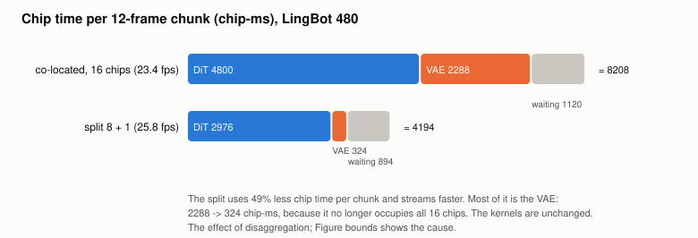
Figure 1. One stream, three chunks: co-located vs disaggregated (measured times).
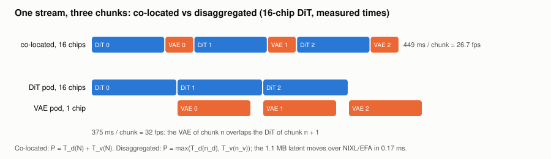
Figure 2. Per-stage scaling: the DiT gains 3.2x from 2 to 16 chips; the VAE stays nearly flat.
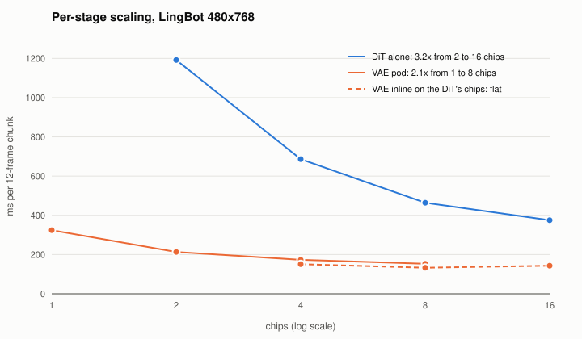
Figure 3. What bounds each stage: floors vs measured time per graph.
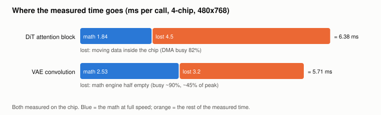
Figure 4. Cost model vs measurement: 15 cells within 1.4%.
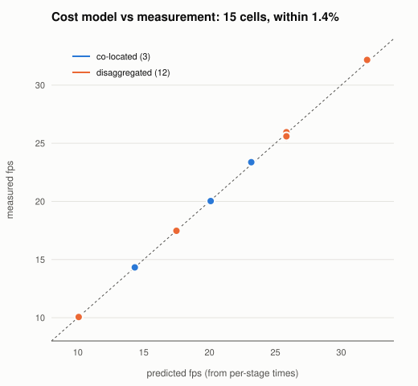
Figure 5. Role-disaggregated serving on EKS and Trainium.
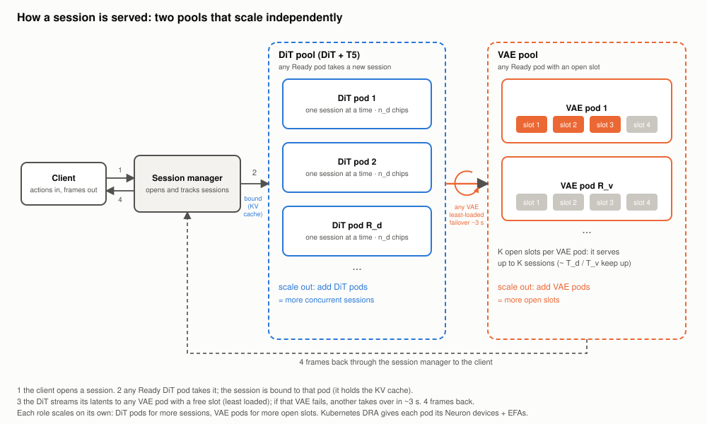
Figure 6. Frame rate vs chips, co-located vs split, 480 and 720p.
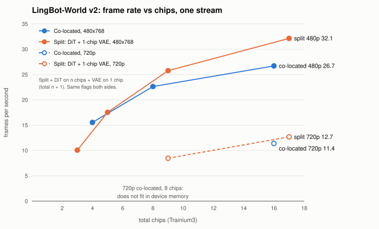
Figure 7. Streams per chip vs fps per stream, every measured configuration.
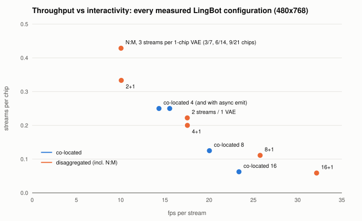
Figure 8. One VAE, several streams: no slowdown.
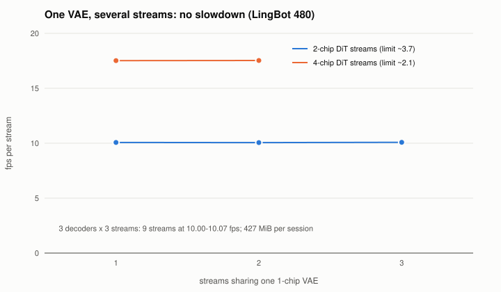
Figure 9. Stable Audio 3: the gain follows the stage ratio.
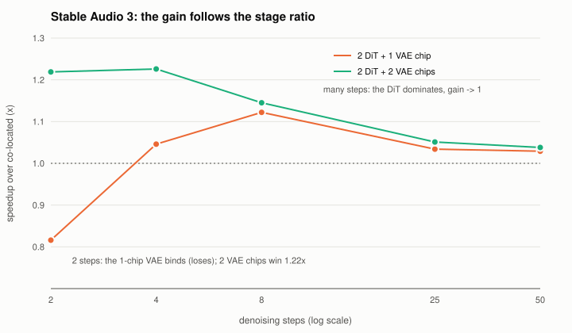
Figure 11. Give the VAE enough chips, or reactions get 0.1 s slower.
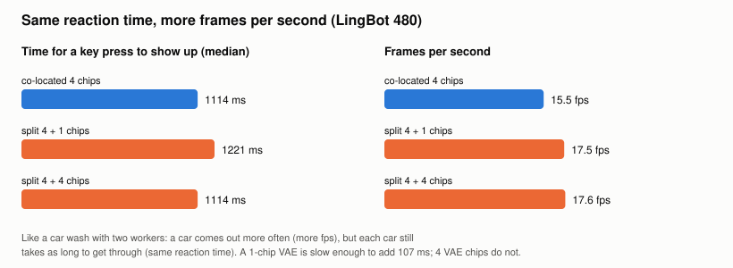